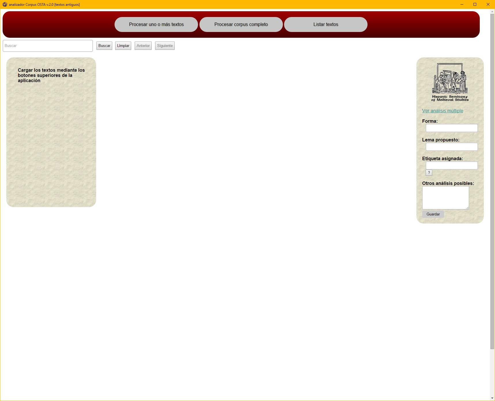
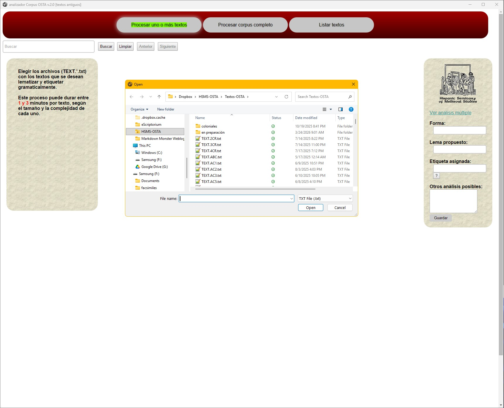
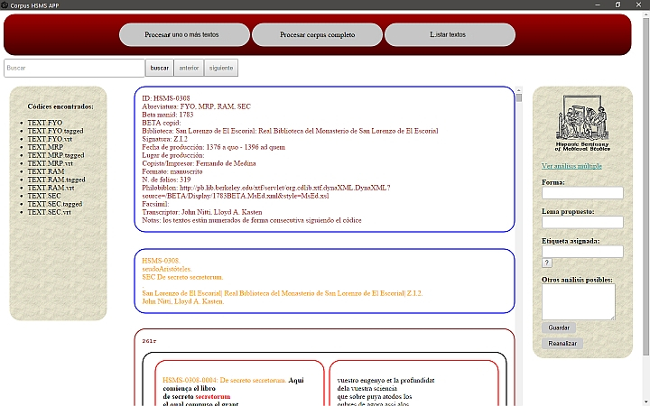
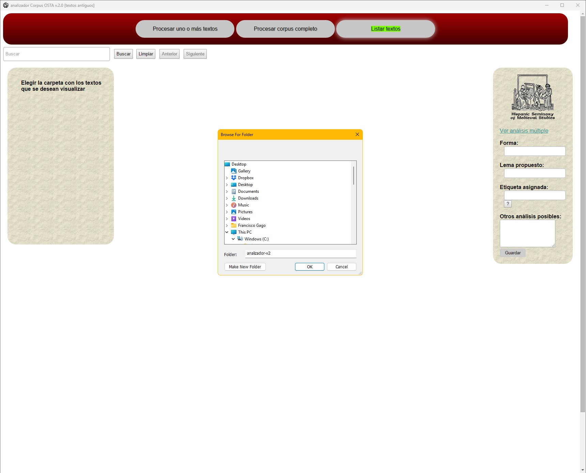
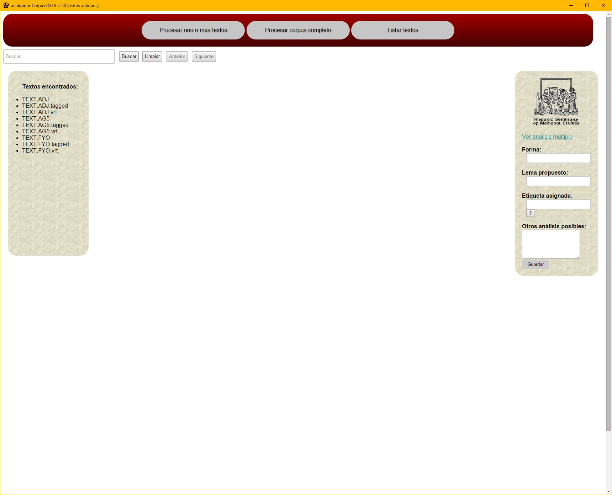

Descripción de la interfaz
La interfaz de trabajo del Analizador Corpus OSTA consta de los siguientes elementos:

- barra de selección de procesos: contiene los botones para procesar transcripciones nuevas (
Procesar uno o más textos,Procesar corpus completo) y para cargar transcripciones ya analizadas (Listar textos). - barra de textos: en esta columna aparecen listadas las transcripciones procesadas.
- ventana de texto: se muestra la transcripción procesada en la que se han resuelto las abreviaturas, se indican añadidos y supresiones, manteniéndose la disposición del texto en el códice (foliación, columnas, cabeceras, signaturas y reclamos). El etiquetado morfológico es visible al pasar el cursor por encima de una palabra.
- caja de búsquedas: permite hacer consultas – palabras completas, fragmentos, secuencias de caracteres o expresiones regulares–-dentro de la transcripción paleográfica. Pueden utilizarse los siguientes comodines:
| comodín | significado |
|---|---|
. |
equivale a un único carácter: n.n, para encontrar nin, njn y nyn. |
? |
el carácter que le precede puede aparecer cero veces o una vez: arciprestes?, para encontrar arcipreste y arciprestes. |
* |
el carácter que le precede puede aparecer cero o más veces: s*c, para encontrar tanto ciencia como sciencia. |
+ |
el carácter que le precede puede aparecer una o más veces: ab+ades, para encontrar abades y abbades. |
[ ] |
cualquiera de los caracteres dentro de los corchetes puede aparecer como mucho una vez: ar[cç][ei], para encontrar arcediano, arcedianos, arçediano, arçedianos, arcipreste, arciprestes, arçipreste y arçiprestes. |
[^ ] |
cualquier carácter excepto los que están dentro de los corchetes: [^r]icos, para encontrar chicos, magicos pero no ricos. |
\b |
para marcar el comienzo o final de una palabra: adgo\b, para encontrar todas las palabras que terminan en adgo; \buvies, para encontrar uviese, uviesen, vuiesen, uviesse, uviessen, vuiessen. |
\s |
cualquier carácter de espacio en blanco: la\scriatura, para encontrar todos los caso de la criatura. |
- analizador: se muestran los diferentes componentes del análisis de la palabra seleccionada--forma, lema propuesto, etiqueta asignada, otros análisis posibles.
El Analizador Corpus OSTA es una herramienta diseñada para trabajar en diferentes fases del proceso de elaboración del Old Spanish Textual Archive: 1) lematizado y etiquetado morfológico de las transcripciones, 2) corrección de las transcripciones paleográficas, y 3) edición y ampliación del diccionario utilizado por el lematizador.
Para procesar una transcripción o un conjunto de transcripciones es preciso hacer clic en Procesar uno o más textos o Procesar corpus completo en la barra de selección de procesos, y seleccionar los ficheros correspondientes en la ventana que aparece en la pantalla.

El procesado de las transcripciones puede durar entre 1 y 3 minutos si se trata de una única transcripción, o de varias horas si lo que se procesa es un corpus completo. Durante el procesado la ventana de texto permanece en blanco, apareciendo en ella la transcripción una vez procesada.

Los dos cuadros que aparecen antes del texto constituyen la cabecera del texto. El cuadro superior muestra los metadatos de los textos ya indexados en el Old Spanish Textual Archive, y estará vacío en los textos sin indexar. El cuadro inferior muestra la información contenida en los campos RMK: situados al comienzo de todas las transcripciones hechas siguiendo las normas del HSMS:
{RMK: código alfanumérico del códice.}
{RMK: autor.}
{RMK: [código alfanumérico de la transcripción] título.}
{RMK: ciudad | impresor | fecha de impresión.}
{RMK: ciudad | biblioteca | signatura.}
{RMK: nombre del transcriptor.}
de esta manera para los textos manuscritos
{RMK: HSMS-0114.}
{RMK: Ruy González de Clavijo.}
{RMK: [TAM] Historia del gran Tamorlán.}
{RMK:.}
{RMK: Madrid | Biblioteca Nacional de España | MSS/9218.}
{RMK: Juan Luis Rodríguez Bravo, María del Mar Martínez Rodríguez.}
y de esta otra para los impresos
{RMK: HSMS-0161.}
{RMK: desconocido.}
{RMK: [VLT] Gran conquista de Ultramar.}
{RMK: Salamanca | Hans Giesser | 1503.}
{RMK: Madrid | Biblioteca Nacional de España | R/518, R/519.}
{RMK: Ray Harris-Northall.}
Para seleccionar una transcripción previamente procesada y comenzar o continuar el proceso de corrección es necesario hacer clic en Listar textos, y seleccionar en la ventana la carpeta que contiene las transcripciones procesadas con las que se quiere trabajar.

mostrándose en la barra de textos el nombre de todos los ficheros disponibles.
